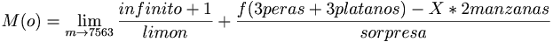

De: La Frikipedia, la enciclopedia extremadamente seria.
De: La Frikipedia, la enciclopedia extremadamente seria. De: La Frikipedia, la enciclopedia extremadamente seria.
| De la serie ciencias naturales y sociales: | |||
| Física | |||
| |||
| Año de creación | Cuando le cayo una manzana a Newton | ||
| ¿Sigue en uso? | Actualmente se usa en un proyecto llamado LHC | ||
| ¿Que estudia? | El universo (eso dice) | ||
| Científicos que la practican | Ninguno, no hay necesidad | ||
| Gente "normal" que la practica | Unos 20 o 30 estudiantes de ingeniería | ||
| Nivel de frikismo | medio alto | ||
| ¿Para que |
Para saber que pasa si nos dan una patada en los cojones | ||
| Dificultad | mucha, muchísima | ||
| Máximo exponente | Albert Einstein | ||
| ¿Es recomendable? | Solo si quieres resolver un simple problema de la manera más dificil posible | ||
La Física comprende el estudio del universo. Lo que se puede y lo que no se puede hacer, y lo que pasará y dejará de pasar si lanzamos una partícula de masa despreciable a un sistema de sólidos rígidos con coeficiente de desintegración 1, a una velocidad lineal de 4 veces su diámetro exterior por el cambio del Momento de frente y una Energía cinético-temporal de veces la variación de Energía interna de la polea (de masa, diámetro, grosor, densidad y volúmen despreciables) que se ha usado para lanzarla; que es, a fin de cuentas, el vulgarmente llamado Big Bang. En la actualidad esta regida por la Teoría de la Relatividad
Newton, hijo experimental de Gracita Morales, fue uno de los científicos que sentó las bases de la Física Vieja. Esta física, aunque ya no valga para nada, se mantiene porque los profesores de 1º de Ingeniería de todas las universidades necesitaban cobrar su sueldo. En la actualidad, se le hace más caso a la Física Nueva (cuantitiva). Las bases de la mecánica fueron establecidas gracias a estas 3 leyes:
Con la primera ley, Newton básicamente dejó bien claro que si no te empujaban, no podías caerte. Para demostrarlo, usó a varias personas y las puso al borde de un acantilado. A dos las empujó y a las otras dos no. Las dos primeras se cayeron, y las otras dos se quedaron en el estado inicial de reposo. Rápidamente, lo anotó de la siguiente forma:

|
Y es por esto que yo estoy segurísimo, lo juro por mi madre, que a no ser que haya alguien o algo que se oponga a que yo esté quieto o no, no cambiaré mi estado. Y así, con todo el mundo y todas las cosas y todo. Hazte caso. | 
|
| Isaac Newton, Mi primera ley. |
A partir de aquí, Newton no paró de excrutar leyes. Así que prosiguió investigando. Esta ley sentaría las bases de, concretamente, nada. Y valdría para, concretamente, tirar a gente por los acantilados y como base para la siguiente ley:
«Yo voy a empezar a morder, y si tú, pastelito, te cruzas en mi camino, no es culpa mía. Cambiaré tu estado.»
~ Homer Simpson sobre el impulso que le mueve
.
En esta segunda ley, Newton quiso demostrar que cuando dos personas chocan a cierta velocidad, la velocidad de las dos es intercambiada, y que se pierde un poco. Para ello, les vendó los ojos a dos corredores olímpicos Nigerianos y los puso a correr en direcciones opuestas. Cuando se chocaron, al que iba más lento le saltaron dos dientes en la dirección opuesta a su velocidad lineal inicial, que vaya casualidad, era la misma con la que iba el otro corredor. Pero Newton se preguntó lo siguiente: ¿qué podría pasar si lo que choca entre sí son objetos blandurrios?.
Newton necesitaba hallar la respuesta, así que puso un par de coches de marca ACME© a 326,543 (pasos de pollo de granja)/(minuto gregoriano del siglo V antes de Jesucristo) en el Sistema Comunista de Unidades y vió que no intercalaron velocidades, sino que se fueron a la mierda. Gracias a este importantísimo descubrimiento, definió lo siguiente:
Con la última ley, Newton demostró que los objetos tienen fuerza. Puso a 30 personas a empujar su casa durante 4 días, y esta no se movió. Al siguiente día puso a 60, pero tampoco se movió...hasta que llegó a poner a Son Goku a empujar la casa. La casa acabó en América, y fue descubierta por Bush hijo años después. Es así como demostró que todo objeto tiene fuerza; y más concretamente, que su casa tenía la fuerza de al menos 500 personas. No se le ocurrió otro nombre para estas fuerzas que el de "Fuerzas anormales".
Con el tiempo, se fue dando cuenta de que las fuerzas anormales estaban en todas partes. También se dio cuenta de que conforme uno hace más fuerza contra una pared o una montaña, ésta también va aumentándola . Es así como definió la Teoría del tengo mas huevos que tú. Con ésta teoría dejó claro lo siguiente:
Un día estaba Newton aburrido. Newton no sabía lo que hacer en ese momento, como en todos los momentos de su vida. Se dedicó a pensar y pensar, sobre los buenos y malos momentos que había pasado hasta entonces. De repente, se cayó de la silla y volvió a golpearse por quintuagésimo segunda vez la cabeza. Es así como Newton definió los Momentos.
Los Momentos pueden ser Momentos de lado o Momentos de Frente. Los Momentos de lado hacen que te caigas de la silla hacia un lado o hacia el otro, y los de frente hacen que te caigas hacia adelante o comúnmente, hacia atrás (por culpa de la Teoría de la Columpiación). Es así como se empezó a definir la rotación, aunque sin mucha idea de ello.
Como antes hemos definido, los momentos nos hacen girar. Hay ciertas personas que tienen muchos momentos, y otras que tienen un verdadero problema con ellos; como los saltadores de trampolín o los esquiadores rusos. El cálculo de los momentos es algo tremendamente básico en la física. Tenemos que elegir un punto y calcular de la siguiente forma:
Como se puede observar, el cálculo fundamental de los momentos no esconde dificultades. Una vez hecho esto, sabremos hacia dónde giraremos o dejaremos de girar, o bien, si giramos o no giramos; y todo esto sin que nos regalen ningún tipo de pin. Podemos resumirlo con la siguiente expresión lógica:


En la cinemática de girar, se grabó el giro de una peonza en una película. Esta película fue proyectada en una sala en la cual fueron encerrados los 20 mejores superdotados del mundo. Un día, uno de ellos descubrío la Cinemática de girar.
«Multiplique usted la rapidez por los pasos de pollo de granja en el Sistema Comunista de Unidades»
~ Superdotado , la cinemática de girar.
En ese momento, hacía falta definir nuevas unidades en el SCU, para la rapidez de giro, ansia de giro y lejanía de giro. Es así como surgieron las siguientes unidades, y es así como queda definida esta parte de la física vieja:
A partir de este momento, se pudo saber cuántas vueltas da la rueda de un hamster cuando le quemas la cola con un mechero; entre otras muchas cosas.
En el momento en el que se definió esta teoría de la giración, se marca el momento en el que los Físicos decidieron dejar de jugar al Teto con palos y circulitos dibujados en un papel al lado de fórmulas sin sentido. En lugar de eso, empezaron a experimentar con cosas algo más duras. No se les ocurrió otra forma que a pedradas.
Con el Sólido Durísimo, explicado anteriormente, aparte de servir para tirárselo a la gente, sirve para hacer física de verdad. En la giración de este sólido ocurre uno de los muchos fenómenos paranormales incompresibles salvo para GTA3) sobre la que está girando, este punto no se mueve.
«EAAAHJJJ!! QUE NO SE MUEVE 'ICEEE!!»
~ Ciudadano Normal Anonadado me quedo, oiga.
Gracias a este increíble descubrimiento, se inventó, por ejemplo, el Hammer de 100.000 Lerus que se compró M.A. tras su jubilación.
A partir de aquí, ya podemos saber la respuesta a la siguiente pregunta:
|
|
Dígamelo:
Si yo le pego una patada a un cilindro, usando una pata de 10 (Piedras de cantera Bilbaína) de masa (SCU), pero también se la pego a un aro y a un disco (poniéndose a girar sin demasiado ansia por la ladera del monte Fuji)... ¿Qué llegará antes a mi casa de Okinawa; el disco, el aro o el cilindro? ¿Con qué rapidez?¿En cuántos minutos Gregorianos en el SCU? |
|
| Ejercicio 10, página 87, Vacaciones Santillana. |
Todavía hacía falta definir un tipo más de movimiento: los movimientos que se repiten, como un mamíferos. Otros movimientos de tipo BIS conocidos son el del Sol y la Tierra; el de cobrar a fin de mes, y el de vaciar la cartilla a fin de mes (los movimientos en la cartilla de saboteos provocan la aparición y desaparición de los números rojos, formando el movimiento BIS).
Los Momentos, antes explicados, tienen la culpa de estos movimientos; así como las fuerzas muelliculares. Los experimentos que se realizaron fueron varios, pero el que desencadenó el descubrimiento consistió en atar a un Cani a un muelle, y, a ciertos pasos de pollo de granja (SCU), colocar un anillo de oro de pega. El Cani, obviamente, en sus intentos por conseguir el anillo, alargó el muelle, hasta que el muelle le hizo retroceder. Hoy en día sigue en un BIS. A continuación, se definen las maginutes de los BIS:
Nadie las veía, pero estaban ahí. Nadie sabe con certeza quién o qué las descubrió, pero se cree que fue el Detective Conan. También los hay que afirman que las descubrió un señor llamado Masgüel, pero nadie ha confirmado su existencia. Existen multitud de tipos de Ondas Chungas, pero todas tienen algo en común: Se mueven, pero no se mueven. Tan sólo hay transporte de Energías Chungas de Momentos de Frente. Un ejemplo de Ondas Chungas son los Tsunamis. Aunque no sea creíble, el tsunami no se mueve. El tsunami sólo se transmite a sí mismo a una nueva posición, dando pasos de pollo de granja (SCU) sin realmente darlos.
Véase Relatividad y Einstein
Explica lo que les ocurre a cosas casi infinitamente pequeñas, tan pequeñas que nunca podrás verlas, experimentar con ellas o incluso olerlas. Lo más curioso sin duda de la Física Cuántica es que, tratándose de algo inventado que sólo puedes ver metiéndote varios litros de ron Barceló entre pecho y espalda, todo el mundo piensa que es algo sencillo y gracioso fruto de la imaginación de un borracho, como los hobbits, los canarios y Superman. Sin embargo la cuántica no nació de la imaginación de un borracho, sino de la de Erwin Schrödinguer, un señor amargado debido a que nadie sabia escribir su apellido, lo que le causó graves problemas psicológicos que le obligaron a llevar de por una cartera marrón a todos los congresos de Física y a adoptar un gato (este sí era un borracho).
La teoría de Einstein dice qe si un cuerpo tras ser impulsado por Vin Diesel, adquiere una velocidad aproximada a la luz y el cuerpo va hacia el futuro ya que un segundo de los suyos son 30 años para la otra gente.
la teoría del Frikista dice qe si un cuerpo a la velocidad de la luz va hacia el futro, un cuerpo a la velocidad exacta de la oscuridad irà hacia el pasada ya qe es lopuesto.
Hay pillin, que te creias que ibas a poder aporbar físca diciendo que aprobaste esta mierda, pues te jodes y bailas una jota, porque esto no es física, a suspender y sacabo chaval...
 Ciencias Ciencias
| ||
|---|---|---|
Ciencias Sociales
Ciencias Exactas
Ciencias Ocultas
|
| | ||
|
Materia
Magnitudes
Mecánica
Cinética y Dinámica
Energía
Física Cuántica y Nuclear
Científicos
|
Autor(es):